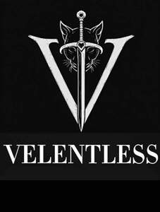

Trade Mark Journal No.2025/026 27 June 2025
UK00004218682 13 June 2025 (3,9,16,25,32,33,41)
Mark 1
Mark 2

- Class 3
- Perfumery and fragrances; scents body sprays; scented oils; non-mediated skin care preparations; skin cleansers; facial masks; lotion, cream, milk, jelly, oil and spray to moisturize, tone, relax and exfoliate the body, hands and feet; skin fresheners and tonics; skin day cream and night cream; skin moisturizing lotion, milk, cream, jelly and oil; cream for use around the eyes; non-medicated sun care preparations; cosmetics; make-up; make-up remover; nail care preparations; cosmetic nail preparations; cosmetic preparations for the hair and scalp; hair shampoos and conditioners; hair masks; hair oils; hair mousses; hair nourishers; hair fixers; hair styling preparations; cosmetic preparations for bath and shower.
- Class 9
- Music recordings; video recordings; downloadable digital music; downloadable video recordings featuring music; reproductions of sound and/or video in electronic and digital form, all supplied by means of multimedia, remote computers or on-line from databases or from facilities provided on the internet (including websites); sound storage media, image storage media and data storage media, all being pre-recorded; computer software relating to music and entertainment; mobile applications relating to music and entertainment; computer programs relating to music and entertainment; digital media relating to music and entertainment; computer software for access to databases relating to music, entertainers, performers, entertainment products, entertainment services and music-related products; multimedia software for downloading music, audio and visual data; CDs, DVDs; audio tapes; pre-recorded vinyl records; sound and/or video recording on corresponding recording carriers; gramophone records; video cassettes; audio cassettes, magnetic tapes, discs, and magnetic wires, all for sound or video recording; pre-recorded downloadable audio recordings; pre-recorded video recordings; pre-recorded downloadable audio and visual recordings; pre-recorded audio and visual recordings in optical disc, DVD and CD format. .
- Class 16
- Prints and art prints; paintings; works of art and decorations, including figurines, made primarily of paper or cardboard; photographs; posters; stationery; coasters of paper; articles of paper packaging; artists' papers; badges made of paper; carrying cases made of paper; decorative wrapping paper; gift paper; doilies of paper; place mats of paper; shopping (carrier) bags of paper; paper bunting; paper flags; paper banners; paper handkerchiefs; paper party decorations; paper table covers; boxes of paper; drawer liners of paper; coasters of cardboard, articles of cardboard packaging and wrapping including boxes, hat boxes, gift boxes, cake boxes and bottle wrappers of cardboard; dinner mats and placemats of cardboard; calendars; diaries; albums; cards; collectible cards, greetings cards and occasion cards; stickers and transfers.
- Class 25
- Clothing; footwear, footwear for women, footwear for men; headwear.
- Class 32
- Mineral and aerated waters; flavoured waters; fruit drinks and fruit juices; vegetable-based drinks; smoothies and smoothie kits; non-alcoholic cocktails; non-alcoholic wine.
- Class 33
- Wine; spirits and liqueurs; gin; vodka; alcoholic cocktails.
- Class 41
- Entertainment services; providing online entertainment; entertainment in the nature of live concerts and performances; musical and audiovisual entertainment services; providing digital music and audiovisual material (not downloadable) from the Internet; entertainment services, namely personal appearances by a musical artist; entertainment services in the nature of music and audiovisual material through the medium of television, radio, cable, satellite and Internet programmes, shows, films, videos and DVDs; entertainment services, namely, performances, videos, related film clips, photographs, and multimedia entertainment provided via a website; entertainment services, namely live, televised and movie appearances by a professional entertainer; providing online entertainment, namely, providing non-downloadable sound and video recordings in the field of music and music based entertainment; entertainment services, namely providing online non-downloadable pre-recorded musical sound and video recordings via a global computer network; providing non-downloadable music, audio, visual and audio-visual recordings and content; providing publications, online publications, web sites, databases, information, news and commentary in the fields of music, entertainment, culture and popular culture; publishing and writing texts, including book texts; production of music, films and of recordings and of audio, visual and audio-visual content; direction of music, films and of performances; fan clubs; audio and sound recording and production; record production; videotape production; entertainment in the nature of live concerts and performances rendered by musical artists through the medium of television, radio, and audio and video recordings; entertainment services, namely recorded performances by musical artists; entertainment services, namely, presentation of music shows before live audiences which are all broadcast live or taped for later broadcast; entertainment services, namely, musical performances, musical videos, music related film clips, photographs, and other multimedia musical entertainment provided via a website; entertainment services, namely, providing on-line reviews of music, musical artists and music videos; entertainment services, namely, providing pre-recorded music, information in the field of music, and commentary and articles about music, all online via a global computer network; organizing exhibitions for entertainment purposes featuring music and the arts; publishing of web magazines in relation to music and entertainment; distribution of music; distribution of musical sound recordings and video recordings; preparing audio-visual displays in the field of music.
Verity Henrietta Crane
Representative: Venner Shipley LLP